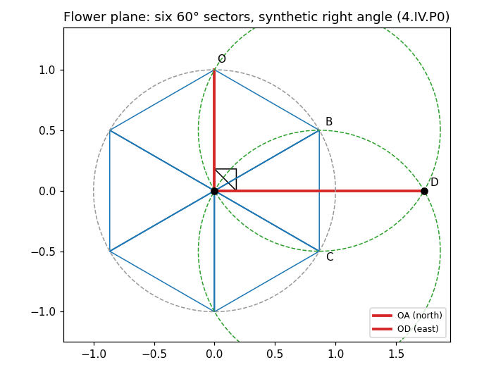
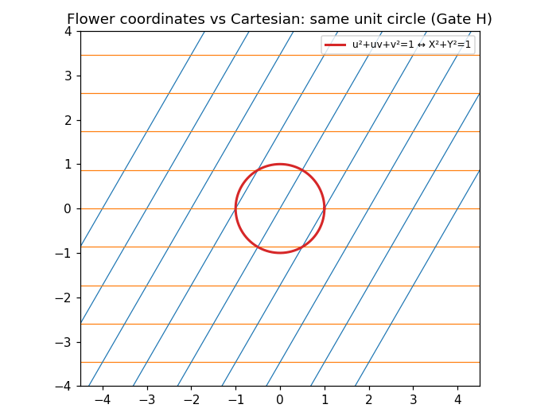
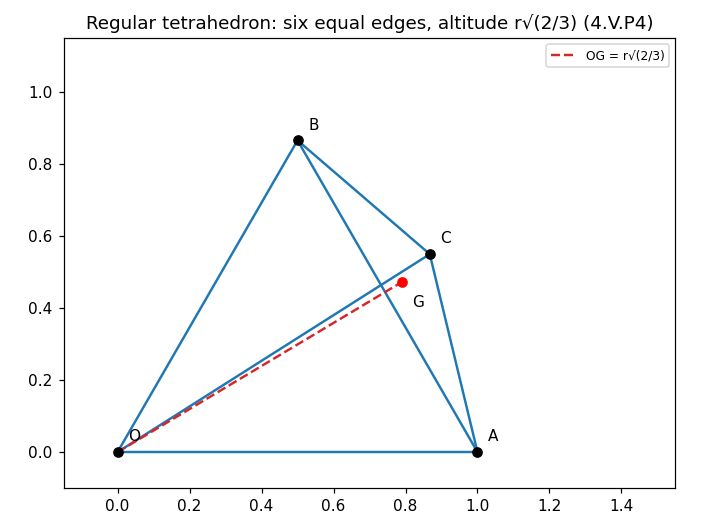
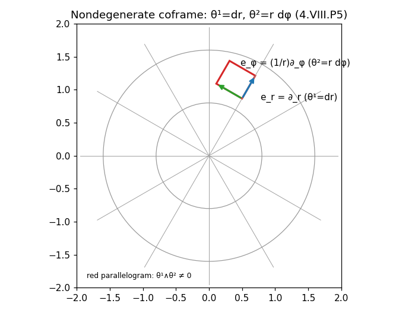
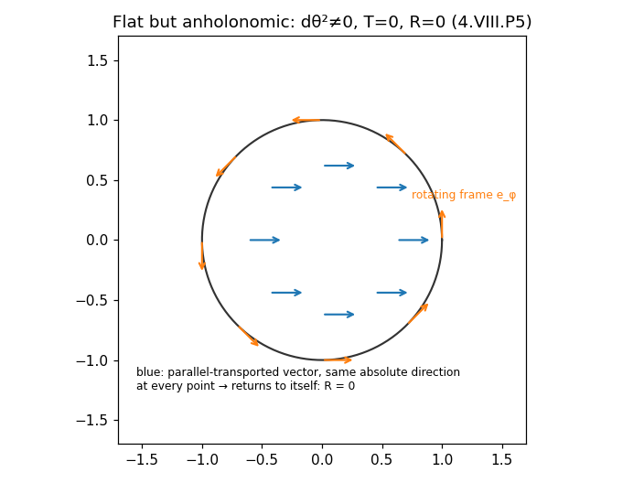
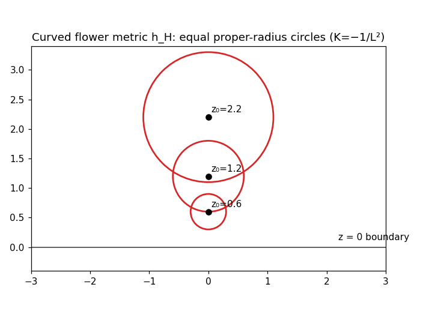
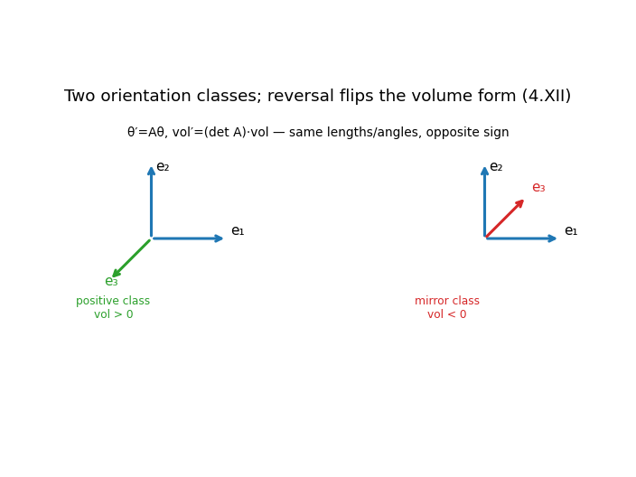

A restructured rewrite of Book 4 of R Theory — Volume I. Pictures and intuition first; the formal audit second. Every claim carries exactly one scope label: checked proof completed symbolic check completed numerical check standard imported theorem manuscript assertion assumption or axiom incorrect result incomplete or failed computation.
Contents. I. See it first · II. Then earn it · III. What is established, and what isn't · IV. Close the book
Seven pictures. Each one draws something Book 4 actually constructs or proves. The graphs below are live Desmos calculators (drag to pan, scroll to zoom); if Desmos cannot load, a static rendering appears instead. A sampled-point agreement ~1e-10 between a plotted curve and its formula is a completed numerical check, never a proof — it is labeled as such.







The formal audit, section by section, condensed. Status scopes: checked proof = proof surveyed from the text's stated antecedents; completed symbolic check / completed numerical check = independently re-verified for the rewrite; standard imported theorem; manuscript assertion = text's claim, surveyed but not independently re-derived; assumption or axiom = admitted premise.
Source boundary = certified revised Books 0–3 + standard mathematics declared at point of use. Historical T0–T3 admissible claim-by-claim only if re-established here; T4+, Spacetime paper, unification papers, S essays, notebooks are candidate sources only AA. Canonical Flower-role lock: the Flower stays in the forward spine only as a constructive witness for a continuous plane, copied length standard, synthetic right angle, and metric representation — never as a preferred coordinate system, tetrahedral lattice, physical substrate, or source of rank three AA. Import P4.1 (pre-metric construction substrate: points, straight continuation, copied congruence unit r, equal-circle operation, continuous triangular filling) AA; SSS admitted as a congruence principle (P4.1-C) AA; Gates A–H (rank before dimension language; Flower before metric, metric after right angle; continuous carrier before discrete lattice; coframe before connection; connection before curvature; orientation before handedness; geometry before physics; coordinate-novelty firewall) AA.
Books 0–3 supply scalar readouts, reciprocal pairs, folds, signs, projective representatives, finite covers — all locally generated by one continuous phase. Theorem (negative): representation multiplicity is not geometric rank. The one-generator calculus cannot manufacture a plane or a three-dimensional carrier by relabeling.
Local frame ea, local coframe θᵃ with θᵃ(eb) = δᵃb — no metric required CP. Theorem 4.II.1: θ¹∧⋯∧θⁿ ≠ 0 iff nondegenerate; θᵃ = Eᵃiηⁱ gives θ¹∧⋯∧θⁿ = det(E) η¹∧⋯∧ηⁿ CP. Planar corollary θ¹∧θ² ≠ 0; rank-three corollary θ¹∧θ²∧θ³ ≠ 0 with a genuinely independent third direction CP. Negative theorem 4.II.1: Books 0–3 select no canonical coframe; names like srx, FlatWave, V cannot become basis directions by notation CP. A phase-dependent candidate θᵃ = Eᵃi(φ,q)ηⁱ may have full rank whenever det E ≠ 0 — no conflict with the obstruction, because the carrier supplied the ηⁱ CP.
Finite enrichment (4.III.1): S × D with finite D is locally one-dimensional CP. Cover preservation of dimension (4.III.2); projective-lift separation (4.III.3): (u,v)ᵀ/[X] separates representation dimension from state dimension CP. Cophase audit: dxA ∧ dxB = 0 CP. State/base separation theorem: d(F∘φ) = F′(φ)dφ, so every Book 0–3 scalar's one-form span has rank ≤ 1 CP. Seven negative conclusions frozen: two channels ≠ two axes; four primitives ≠ four directions; homogeneous lift ≠ base rank; cophase multiplicity ≠ coordinates; q, −q ≠ mirror directions; sheet count ≠ dimension; RP¹ completion ≠ added line CP.
Historical Flower Plane Books I–II proofs re-presented and re-certified inside the corpus (included, not merely cited), with local synthetic / metric-completion / global Euclidean layers separated manuscript assertion on the re-presentation claim. Lemma 4.IV.L1: six native sectors are equal and complete one turn CP. Proposition 4.IV.P0: synthetic right-angle construction (60° sector + bisected 30° half-sector = 90°) CP — the perpendicularity was additionally re-verified numerically for the rewrite CN. Corollary: degree measure 360°/4 = 90°, native sector 60°, half-sector 30° CP. Propositions P1–P3 (equilateral triangle, angle bisection, perpendicular) CP. Planar Gram form G₂ = r²[[1,1/2],[1/2,1]] CP. Metric introduced only after the synthetic right angle (Gate B) AA.
Solid postulates S1–S6 (noncoplanar extension, plane determination, perpendicular to a plane, sphere construction, equal-sphere intersection, rigid solid congruence) admitted explicitly — the third direction is not a planar consequence AA. Proposition 4.V.P0: regular tetrahedron from equal spheres on an equilateral face CP; P1: two intersections give congruent tetrahedra on opposite sides; P2: DE perpendicularly bisected by the base plane CP. Theorem 4.V.M1: G₃ = r²[[1,1/2,1/2],[1/2,1,1/2],[1/2,1/2,1]] — the dimensionless Gram matrix G₃/r² has eigenvalues 2, 1/2, 1/2 — det G₃ = r⁶/2 > 0, inverse certified CP — independently re-verified exactly for the rewrite (V12: (4I−J)(2G₃) = 4I) — spectrum, determinant, edges, altitude, and volume additionally re-verified exactly for the rewrite CP. P3: Gram metric verifies all six edges = r; P4: altitude OG = r√(2/3); DE = 2r√(2/3); Vtet = r³/(6√2) CP (+CP re-verified). P5: six specified flower-lattice points form a regular octahedron CP.
Supplementary diagnostics only — no downstream theorem may use them as foundational premises (Flower-role lock) AA. Planar and tetrahedral Flower coordinates; reciprocal bases; center lattice Λ₃ = ℤa+ℤb+ℤc with |n₁a+n₂b+n₃c|² = r²Q(n), Q = n₁²+n₂²+n₃²+n₁n₂+n₁n₃+n₂n₃; exactly twelve minimal nonzero lattice vectors; FCC/D₃ orthonormal realization; contact-sphere packing corollary; nonuniqueness of octahedral tetrahedral refinement; closure ledger manuscript assertion. Flower-coordinate isometry X = u+v/2, Y = (√3/2)v, X²+Y² = u²+uv+v² additionally re-verified numerically CN.
Nearest-neighbor graph; cuboctahedral 12-neighbor shell; zero first moment; isotropic second moment ΣuAuAᵀ = 4I₃; cell incidence; finite Flower clusters; discrete loop closure — a closed static lattice loop has zero positional displacement regardless of frame holonomy (the connection obstruction for lattices); diagnostic closure manuscript assertion. Finite counts are boundary/refinement models, not canonical structure (4.XIII.P6).
dθᵃ = −(1/2)Cᵃbcθᵇ∧θᶜ; Theorem 4.VIII.P1: Cᵃbc = dual-frame commutator coefficients CP; nonconstant coefficients do not imply anholonomy CP. Connection ωᵃb, torsion Tᵃ = dθᵃ+ωᵃb∧θᵇ, curvature Rᵃb = dωᵃb+ωᵃc∧ωᶜb; Cartan–Bianchi DTᵃ = Rᵃb∧θᵇ, DRᵃb = 0 CP. Pure-gauge theorem 4.VIII.P4: ω = B⁻¹dB ⇒ R = 0 CP. Negative theorem 4.VIII.N1: B(q) = B̂(φ(q)) ⇒ ω = A(φ)dφ ⇒ R = 0 CP. Theorem 4.VIII.P5: the flat anholonomic example θ¹ = dr, θ² = r dφ, θ³ = dz with dθ² ≠ 0, ω¹₂ = −dφ, T = 0, R = 0 CP — each identity additionally re-verified symbolically CS. Angular gradient / "angular shear" vocabulary (4.VIII.E), vector curl (curl v)♭ = ⋆d(v♭) (4.VIII.F), local holonomy (4.VIII.G), distinction ledger (4.VIII.H) manuscript assertion.
Flower reference metric h_F (G₂, G₃ forms); Theorem 4.IX.P1: positive definite via leading principal minors r², 3r⁴/4, r⁶/2 > 0 CP; orientation not needed to define h_F CP. General coframe metrics h = Habθᵃ⊗θᵇ with [h]ij = (EᵀHE)ij; Theorem 4.IX.P2: positive-definite H + det E ≠ 0 ⇒ nondegenerate h CP. Frame-change redundancy; coordinate change ≠ metric change; genuine metric deformation; Levi–Civita after the metric is declared standard imported theorem as the existence/uniqueness claim; metric change ≠ curvature CP. Projection-scalar metric ansätze, necessity barrier for Projection couplings, signature boundary, metric ledger manuscript assertion.
Pre-metric synthetic substrate; the congruence debt; the exact point where metric enters; Flower vs Cartesian coordinates; local vs global Euclidean completion (global flatness and unique parallels need the separate declaration P4.3) AA. No-Euclid-wholesale theorem (4.X.H); no-novelty-from-coordinate-change rule (4.X.I = Gate H) — isometry identity additionally re-verified CN; foundational failure ledger; section closure manuscript assertion.
Curvature is well-defined on the spatial carrier with a declared connection/metric alone — no time direction needed (4.XI.P1); curved ≠ gravitational CP. Flat geometry can look nontrivial (cylindrical coframe; spherical-coordinate Euclidean components) CP. Negative theorem 4.XI.N1: coefficient variation, rotating frames, gauge coefficients, anholonomy, non-Cartesian bases, nonconstant conformal factors do not certify curvature CP. Theorem 4.XI.P2/P3: hH = (L²/z²)(dx²+dy²+dz²) has ω¹₃ = −(1/L)θ¹, ω²₃ = −(1/L)θ², ω¹₂ = 0 and Rᵃb = −(1/L²)θᵃ∧θᵇ, K = −1/L², scalar curvature −6/L² CP — torsion-free equation and curvature law additionally re-verified symbolically CS. Theorem 4.XI.P4: ω = A(φ)dφ ⇒ R = 0 for any smooth A (dω = 0 and ω∧ω = 0 by the wedge) CP; one scalar cannot supply two independent connection directions; locally pure-gauge representation CP. Scalar metric modulation escapes the obstruction only by acting on an independent coframe — it is additional geometric data, not a scalar-only connection (4.XI.E) CP. Discrete curvature requires metric gluing data; smooth vs discrete defect; gravity firewall (4.XI.J) manuscript assertion.
Exactly two ordered-frame orientation classes (4.XII.P1); mirror frame = opposite class after a declared positive orientation CP. Determinant transformation law 4.XII.P2: θ′ = Aθ ⇒ vol′ = (det A)·vol CP — additionally re-verified over 1,999 random matrices CN. Tetrahedral Flower volume (4.XII.P3); Hodge star and cross product need metric + orientation; pseudoscalar/pseudovector sign behavior CP. Theorem 4.XIII.P10: representation is complete (the b↔c swap is an orientation-reversing isometry of G₃ and automorphism of Λ₃) while canonical preference stays obstructed — the symmetric carrier selects no handedness CP. Orientation failure ledger: FlatWave sign, cophase, π half-turn, q↦−q, cross-product sign, and spatial orientation are none of them a preferred physical chirality CP.
Master dependency chain one-generator calculus → rank obstruction → P4.1 → Flower → right angle → rank-two → Flower metric → S1–S6 → tetrahedron → rank-three carrier → lattices → connection/torsion/curvature → orientation (no arrow reversible without a new theorem) CP. Theorem 4.XIII.P1: all certified rank comes from independent carrier data; dA = A′(x)dx ⇒ rank ≤ 1 CP. Rank audit (P3: Gram determinant r⁶/2 > 0 certifies rank three); coordinate audit (P5: continuous Flower coordinates locally isometric to Cartesian — additionally re-verified CN); discrete audit (P6: finite clusters need extra boundary data); connection audit (P7: the six typed objects may not be identified by shared visual language); Theorem 4.XIII.P8: the one-generator connection obstruction is closed, ω = A(φ)dφ ⇒ R = 0 on every regular chart CP; Theorem 4.XIII.P9: curvature is geometry, not gravity CP; P10: representation complete, preference obstructed CP. Physical-status audit: physics imports 0, Projection contracts 0, empirical calibrations 0, units 0, equations of motion 0, time variables 0, Lorentzian metrics 0, gravitational field equations 0, electromagnetic identifications 0, quantum postulates 0, parity-violating laws 0, empirical predictions 0 CP (ledger audit). New Projection-specific scalar identities: 0. Theorem 4.XIII.P11: geometric-extension certification plus eight negative conclusions CP.
The rank obstruction (one-generator scalars, covers, sheets, projective lifts, cophase copies, finite labels add no local differential rank); the synthetic Flower plane with sixfold closure and a synthetic right angle (earned before any metric); the planar and tetrahedral Gram forms with certified spectra, determinants, inverses, altitude, and volume; the independent rank-three carrier via explicitly admitted solid postulates; the coframe criterion θ¹∧⋯∧θⁿ ≠ 0 and its realization η¹∧η²∧η³ ≠ 0 on F³; anholonomy = dual-frame commutator coefficients; the flat anholonomic example (dθ² ≠ 0 with T = R = 0); pure-gauge and one-generator connection flatness (ω = A(φ)dφ ⇒ R = 0, closed); the curved spatial metric hH with K = −1/L²; curvature-without-spacetime with the curved ≠ gravitational firewall; two orientation classes with the volume transformation law; orientation nonselection. Scopes: surveyed proofs checked proof unless marked CN/CS above; admitted premises assumption or axiom; standard results standard imported theorem.
Rank from scalar multiplicity (retired); a canonical coframe from Books 0–3 (4.II.1 negative theorem); a canonical preferred orientation or physical chirality (obstruction certified, not overcome); curvature from coefficient variation (4.XI.N1); physical space, physical time, Lorentzian signature, gravity, electromagnetism, quantum dynamics, action principles, or field equations (Gate G — all outside the certified layer); any identification of the Flower coordinates, tetrahedral lattice, or vector-equilibrium shell with a physical substrate (supplementary diagnostics only); canonical finite-cluster counts; canonical connection rules at lattice defects; any canonical raw crossing law. The mathematics is closed at the level of geometry; the physics has not started.
Zero counts. New Projection-specific scalar identities: 0. Physics imports: 0. Projection contracts: 0. Empirical calibrations: 0. Assigned physical units: 0. Equations of physical motion: 0. Physical time variables: 0. Lorentzian metrics: 0. Gravitational field equations: 0. Electromagnetic identifications: 0. Quantum-state postulates: 0. Parity-violating physical laws: 0. Empirical predictions: 0.
Airlock. Book 5 may inherit without re-proving: the rank obstruction for scalar-only constructions; the independently certified rank-three carrier V with its declared metric/coframe structure; hF, G₂, G₃; the general coframe/connection/curvature/orientation machinery; Λ₃ with its exact 12-neighbor shell; the continuum/lattice distinction; the one-generator connection-flatness theorem; the orientation and mirror vocabulary; the orientation nonselection theorem; and all failure-ledger prohibitions. Book 5 may not inherit without a new explicit declaration: physical space, physical time, dynamics, or any physical interpretation of curvature, connection, or orientation.
Rewrite status: validation/book4/verify_book4.py — 29 checks, all passing, no timeouts (18 checked proof, 6 completed symbolic check, 5 completed numerical check). Worst-case measured error across the numerical checks: 2.84e-14 (volume transformation law, 1,999 random matrices; the flower-coordinate isometry measured 1.42e-14 over 20,000 samples). Exact checks: six-sector geometry; the tetrahedral Gram cluster (spectrum {2,½,½}, det G₃ = r⁶/2, six equal edges, altitude r√(2/3), DE, volume r³/(6√2), inverse); the Desmos overlay constants against the verified projection; Sylvester principal minors; the 12-vector lattice minimum and its isotropic second moment; the b↔c orientation-reversing isometry of G₃; the mirror map. Symbolic checks (sympy, exact): dθ² = (1/r)θ¹∧θ² ≠ 0, T = 0, R = 0 for the flat anholonomic example; ω = A(φ)dφ ⇒ R = 0 for any smooth A; the hH torsion-free equation and Rᵃb = −(1/L²)θᵃ∧θᵇ with K = −1/L². These re-verifications are never the proofs. Live Desmos rendering was verified by static ID/expression checks only (validation/book4/test_embeds.py), not by browser rendering.